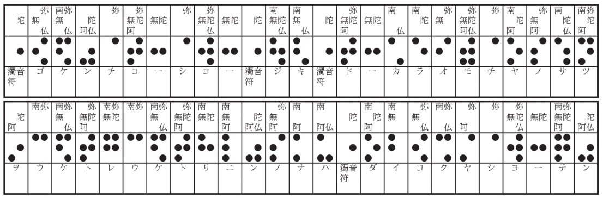

Aozora work 056647
Public-domain Japanese literature
二銭銅貨
にせんどうか
- First published
- 「新青年」博文館、1923（大正12）年4月
- Aozora release
- Orthography
- 新字新仮名
- Edition
- 江戸川乱歩全集 第1巻 屋根裏の散歩者
- Publisher
- 光文社文庫、光文社
- Source
- Aozora Bunko card
Learner profile
Difficulty statistics
37out of 100
Model blue-sora-difficulty-v1 · status: ok
- Words
- 10,298
- Characters
- 16,979
- Sentences
- 454
- Average sentence
- 22.7 words
- Unique words
- 1,625
- Unique kanji
- 953
- Single-use words
- 915 · 56.3%
- Single-use kanji
- 309
- Lexical rarity
- 22.2 · weight 55%
- Kanji rarity
- 59.9 · weight 25%
- Sentence complexity
- 50.5 · weight 20%
- Lexical surprisal
- 2.665
- Kanji surprisal
- 2.998
Online reader
Read here
上#
「あの泥坊が羨しい」二人の間にこんな言葉が交される程、其頃は窮迫していた。
場末の貧弱な下駄屋の二階の、ただ一間しかない六畳に、一閑張りの破れ机を二つ並べて、松村武とこの私とが、変な空想ばかり逞しゅうして、ゴロゴロしていた頃のお話である。
もう何もかも行詰って了って、動きの取れなかった二人は、丁度その頃世間を騒がせた大泥坊の、巧みなやり口を羨む様な、さもしい心持になっていた。
その泥坊事件というのが、このお話の本筋に大関係を持っているので、茲にザッとそれをお話して置くことにする。
芝区のさる大きな電気工場の職工給料日当日の出来事であった。十数名の賃銀計算係が、一万に近い職工のタイム・カードから、夫々一ヶ月の賃銀を計算して、山と積まれた給料袋の中へ、当日銀行から引出された、一番の支那鞄に一杯もあろうという、二十円、十円、五円などの紙幣を汗だくになって詰込んでいる最中に、事務所の玄関へ一人の紳士が訪れた。
受付の女が来意を尋ねると、私は朝日新聞の記者であるが、支配人に一寸お眼にかかり度いという。そこで女が、東京朝日新聞社会部記者と肩書のある名刺を持って、支配人にこの事を通じた。
幸なことには、この支配人は、新聞記者操縦法がうまいことを、一つの自慢にしている男であった。のみならず、新聞記者を相手に、法螺を吹いたり、自分の話が何々氏談などとして、新聞に載せられたりすることは、大人気ないとは思いながら、誰しも悪い気持はしないものである。社会部記者と称する男は、寧ろ快く支配人の部屋へ請じられた。
大きな鼈甲縁の眼鏡をかけ、美しい口髭をはやし、気の利いた黒のモーニングに、流行の折鞄という扮装のその男は、如何にも物慣れた調子で、支配人の前の椅子に腰を下した。そしてシガレット・ケースから、高価な埃及の紙巻煙草を取出して、卓上の灰皿に添えられた燐寸を手際よく擦ると、青味がかった煙を、支配人の鼻先へフッと吹出した。
「貴下の職工待遇問題に関する御意見を」
とか、何とか、新聞記者特有の、相手を呑んでかかった様な、それでいて、どこか無邪気な、人懐っこい調子で、その男はこう切出した。
そこで支配人は、労働問題について、多分は労資協調、温情主義という様なことを、大いに論じた訳であるが、それはこの話に関係がないから略するとして、約三十分ばかり支配人の室に居った所の、その新聞記者が、支配人が一席弁じ終ったところで「一寸失敬」といって便所に立った間に、姿を消して了ったのである。
支配人は、無作法な奴だ位で、別に気にもとめないで、丁度昼食の時間だったので、食堂へと出掛けて行ったが、暫くすると近所の洋食屋から取ったビフテキか何かを頬張っていた所の支配人の前へ、会計主任の男が、顔色を変えて、飛んで来て、報告することには、
「賃銀支払の金がなくなりました。とられました」
と云うのだ。
驚いた支配人が、食事などはその儘にして、金のなくなったと云う現場へ来て調べて見ると、この突然の盗難の仔細は、大体次の様に想像することが出来たのである。
丁度其当時、その工場の事務室が改築中であったので、いつもなれば、厳重に戸締りの出来る特別の部屋で行われる筈の賃銀計算の仕事が、其日は、仮に支配人室の隣の応接間で行われたのであるが、昼食の休憩時間に、どうした物の間違いか、其応接間が空になって了ったのである。事務員達は、お互に誰か残って呉れるだろうという様な考えで、一人残らず食堂へ行って了って、後には支那鞄に充満した札束が、ドアには鍵もかからないその部屋に、約半時間程も、抛り出されてあったのだ。その隙に、何者かが忍入って、大金を持去ったものに相違ない。それも、既に給料袋に入れられた分や、細い紙幣には手もつけないで、支那鞄の中の二十円札と十円札の束丈けを持去ったのである。損害高は約五万円であった。
色々調べて見たが、結局、どうも先程の新聞記者が怪しいということになった。新聞社へ電話をかけて見ると、案の定、そういう男は本社員の中にはないという返事だ。そこで、警察へ電話をかけるやら、賃銀支払を延す訳には行かぬので、銀行へ改めて二十円札と十円札の準備を頼むやら、大変な騒ぎになったのである。
彼の新聞記者と自称して、お人よしの支配人に無駄な議論をさせた男は、実に、当時新聞が、紳士盗賊という尊称を以て書き立てた所の大泥坊であったのだ。
さて、管轄警察署の司法主任其他が臨検して調べて見ると、手懸りというものが一つもない。新聞社の名刺まで用意して来る程の賊だから、なかなか一筋繩で行く奴ではない。遺留品などあろう筈もない。ただ一つ分っていた事は、支配人の記憶に残っているその男の容貌風采であるが、それが甚だ便りないのである。というのは、服装などは無論取替えることが出来るし、支配人がこれこそ手懸りだと申出た所の、鼈甲縁の眼鏡にしろ、口髭にしろ、考えて見れば、変装には最もよく使われる手段なのだから、これも当てにはならぬ。
そこで、仕方がないので、盲目探しに、近所の車夫だとか、煙草屋のお上さんだとか、露天商人などいう連中に、かくかくの風采の男を見かけなかったか、若し見かけたらどの方角へ行ったかと、一々尋ね廻る。無論市内の各巡査派出所へも、この人相書きが廻る。つまり非常線が張られた訳であるが、何の手ごたえもない。一日、二日、三日、あらゆる手段が尽された。各停車場には見張りがつけられた。各府県の警察署へ依頼の電報が発せられた。
斯様にして、一週間は過ぎたけれども賊は挙がらない。もう絶望かと思われた。彼の泥坊が、何か他の罪をでも犯して挙げられるのを待つより外はないかと思われた。工場の事務所からは、其筋の怠慢を責める様に、毎日毎日警察署へ電話がかかった。署長は自分の罪ででもある様に頭を悩した。
そうした絶望状態の中に、一人の、同じ署に属する刑事が、市内の煙草屋の店を、一軒ずつ、丹念に歩き廻っていた。
市内には、舶来の煙草を一通り備付けていようという煙草屋が、各区に、多いのは数十軒、少い所でも十軒内外はあった。刑事は殆どそれを廻り尽して、今は、山の手の牛込と四谷の区内が残っているばかりであった。
今日はこの両区を廻って、それで目的を果さなかったら、もう愈々絶望だと思った刑事は、富鬮の当り番号を読む時の様な、楽しみとも恐れともつかぬ感情を以て、テクテク歩いていた。時々交番の前で立止っては、巡査に煙草店の所在を聞訊しながら、テクテクと歩いていた。刑事の頭の中は FIGARO. FIGARO. FIGARO. と埃及煙草の名前で一杯になっていた。
ところが、牛込の神楽坂に一軒ある煙草店を尋ねる積りで、飯田橋の電車停留所から神楽坂下へ向って、あの大通りを歩いている時であった。刑事は、一軒の旅館の前で、フト立止ったのである。というのは、その旅館の前の、下水の蓋を兼ねた、御影石の敷石の上に、余程注意深い人でなければ、眼にとまらない様な、一つの煙草の吸殻が落ちていた。そして、何んと、それが刑事の探し廻っていた所の埃及煙草と同じものであったのである。
さて、この一つの煙草の吸殻から足がついて、さしもの紳士盗賊も遂に獄裡の人となったのであるが、その煙草の吸殻から盗賊逮捕までの径路に一寸探偵小説じみた興味があるので、当時のある新聞には、続き物になって、その時の何某刑事の手柄話が載せられた程であるが――この私の記述も、実はその新聞記事に拠ったものである――私は茲には、先を急ぐ為に、極く簡単に結論丈けしかお話している暇がないことを遺憾に思う。
読者も想像されたであろう様に、この感心な刑事は、盗賊が工場の支配人の部屋に残して行った所の、珍らしい煙草の吸殻から探偵の歩を進めたのである。そして、各区の大きな煙草屋を殆んど廻り尽したが、仮令おなじ煙草を備えてあっても、埃及の中でも比較的売行きのよくない、FIGARO を最近に売ったという店は極く僅かで、それが悉く、どこの誰それと疑うまでもない様な買手に売られていたのである。
ところが愈々最終という日になって、今もお話した様に、偶然にも、飯田橋附近の一軒の旅館の前で、同じ吸殻を発見して、実は、あてずっぽうに、その旅館に探りを入れて見たのであるが、それがなんと僥倖にも、犯人逮捕の端緒となったのである。
そこで、色々、苦心の末、例えば、その旅館に投宿して居った、その煙草の持主が、工場の支配人から聞いた人相とはまるで違っていたり、なにかして、大分苦心したのであるが、結局、その男の部屋の火鉢の底から、犯行に用いたモーニング其他の服装だとか、鼈甲縁の眼鏡だとか、つけ髭だとかを発見して、逃れぬ証拠によって、所謂紳士泥坊を逮捕することが出来たのである。
で、その泥坊が取調べを受けて白状した所によると、犯行の当日――勿論、その日は職工の給料日と知って訪問したのだが――支配人の留守の間に、隣の計算室に這入って例の金を取ると、折鞄の中にただそれ丈けを入れて居った所の、レーンコートとハンチングを取出して、その代りに、鞄の中へは、盗んだ紙幣の一部分を入れて、眼鏡をはずし、口髭をとり、レーンコートでモーニング姿を包み、中折の代りにハンチングを冠って、来た時とは別の出口から、何食わぬ顔をして逃げ出したのであった。あの小額の紙幣で五万円という金額を、どうして、誰にも疑われぬ様に、持出すことが出来たかという訊問に対して、紳士泥坊が、ニヤリと得意らしい笑いを浮べて答えたことには、
「私共は、からだ中が袋で出来上っています。その証拠には、押収されたモーニングを調べて御覧なさい。一寸見ると普通のモーニングだが、実は手品使いの服の様に、附けられる丈けの隠し袋が附いているんです。五万円位の金を隠すのは訳はありません。支那人の手品使いは、大きな、水の這入った丼鉢でさえからだの中へ隠すではありませんか」
さて、この泥坊事件がこれ丈けでおしまいなら、別段の興味もないのであるが、茲に一つ普通の泥坊と違った、妙な点があった。そして、それが私のお話の本筋に、大いに関係がある訳なのである。
というのは、この紳士泥坊は、盗んだ五万円の隠し場所について、一言も白状しなかったのである。警察と、検事廷と、公判廷と、この三つの関所で、手を換え品を換えて責め問われても、彼はただ知らないの一点張りで通した。そして、おしまいには、その僅か一週間ばかりの間に、使い果して了ったのだという様な、出鱈目をさえ云い出したのである。
其筋としては、探偵の力によって、その金のありかを探し出す外はなかった。そして、随分探したらしいのであるが、一向見つからなかった。そこで、その紳士泥坊は、五万円隠匿の廉によって、窃盗犯としては可也重い懲役に処せられたのである。
困ったのは被害者の工場である。工場としては、犯人よりは五万円が発見して欲しかったのである。勿論、警察の方でもその金の捜索を止めた訳ではないが、どうも手ぬるい様な気がする。そこで、工場の当の責任者たる支配人は、その金を発見したものには、発見額の一割の賞を懸けるということを発表した。つまり五千円の懸賞である。
これからお話しようとする、松村武と私自身とに関する、一寸興味のある物語は、この泥坊事件がこういう風に発展している時に起ったことなのである。
中#
この話の冒頭にも一寸述べた様に、その頃、松村武と私とは、場末の下駄屋の二階の六畳に、もうどうにもこうにも動きがとれなくなって、窮乏のどん底にのたうち廻っていたのである。
でも、あらゆるみじめさの中にも、まだしも幸運であったのは、丁度時候が春であったことだ。これは貧乏人丈けにしか分らない一つの秘密であるが、冬の終から夏の初にかけて、貧乏人は、大分儲けるのである。いや、儲けたと感じるのである。というのは、寒い時丈け必要であった、羽織だとか、下着だとか、ひどいのになると、夜具、火鉢の類に至るまで、質屋の蔵へ運ぶことが出来るからである。私共も、そうした気候の恩恵に浴して、明日はどうなることか、月末の間代の支払はどこから捻出するか、という様な先の心配を除いては、先ず一寸いきをついたのである。そして、暫く遠慮して居った銭湯へも行けば、床屋へも行く、飯屋ではいつもの味噌汁と香の物の代りに、さしみで一合かなんかを奮発するといった鹽梅であった。
ある日のこと、いい心持にって、銭湯から帰って来た私が、傷だらけの、毀れかかった一閑張の机の前に、ドッカと坐った時、一人残っていた松村武が、妙な、一種の興奮した様な顔付を以て、私にこんなことを聞いたのである。
「君、この、僕の机の上に二銭銅貨をのせて置いたのは君だろう。あれは、どこから持って来たのだ」
「アア、俺だよ。さっき煙草を買ったおつりさ」
「どこの煙草屋だ」
「飯屋の隣の、あの婆さんのいる不景気なうちさ」
「フーム、そうか」
と、どういう訳か、松村はひどく考え込んだのである。そして、尚も執拗にその二銭銅貨について尋ねるのであった。
「君、その時、君が煙草を買った時だ、誰か外にお客はいなかったかい」
「確か、いなかった様だ。そうだ。いる筈がない。その時あの婆さんは居眠りをしていたんだ」
この答を聞いて、松村は何か安心した様子であった。
「だが、あの煙草屋には、あの婆さんの外に、どんな連中がいるんだろう。君は知らないかい」
「俺は、あの婆さんとは仲よしなんだ。あの不景気な仏頂面が、俺のアブノーマルな嗜好に適したという訳でね。だから、俺は相当あの煙草屋については詳しいんだ。あそこには婆さんの外に、婆さんよりはもっと不景気な爺さんがいる切りだ。併し君はそんなことを聞いてどうしようというのだ。どうかしたんじゃないかい」
「マアいい。一寸訳があるんだ。ところで君が詳しいというのなら、も少しあの煙草屋のことを話さないか」
「ウン、話してもいい。爺さんと婆さんとの間に一人の娘がある。俺は一度か二度その娘を見かけたが、そう悪くない容色だぜ。それがなんでも、監獄の差入屋とかへ嫁いているという話だ。その差入屋が相当に暮しているので、その仕送りで、あの不景気な煙草屋も、つぶれないで、どうかこうかやっているのだと、いつか婆さんが話していたっけ。……」
こう、私が煙草屋に関する知識について話し始めた時に、驚いたことには、それを話して呉れと頼んで置きながら、もう聞き度くないと云わぬばかりに、松村武が立上ったのである。そして、広くもない座敷を、隅から隅へ丁度動物園の熊の様に、ノソリノソリと歩き始めたのである。
私共は、二人共、日頃から随分気まぐれな方であった。話の間に突然立上るなどは、そう珍しいことでもなかった。けれども、この場合の松村の態度は、私をして沈黙せしめた程も、変っていたのである。松村はそうして、部屋の中をあっちへ行ったり、こっちへ行ったり、約三十分位歩き廻っていた。私は黙って、一種の興味を以て、それを眺めていた。その光景は、若し傍観者があって、之を見たら、余程狂気じみたものであったに相違ないのである。
そうこうする内に、私は腹が減って来たのである。丁度夕食時分ではあったし、湯に入った私は余計に腹が減った様が気がしたのである。そこで、まだ狂気じみた歩行を続けている松村に、飯屋に行かぬかと勧めて見た所が、「済まないが、君一人で行って呉れ」という返事だ。仕方なく、私はその通りにした。
さて、満腹した私が、飯屋から帰って来ると、なんと珍らしいことには、松村が按摩を呼んで、もませていた。以前は私共のお馴染であった、若い盲唖学校の生徒が、松村の肩につかまって、しきりと何か、持前のお喋りをやっているのであった。
「君、贅沢だと思っちゃいけない。これには訳があるんだ。マア、暫く黙って見ていて呉れ。その内に分るから」
松村は、私の機先を制して、非難を予防する様に云った。昨日、質屋の番頭を説きつけて、寧ろ強奪して、やっと手に入れた二十円なにがしの共有財産の寿命が、按摩賃六十銭丈け縮められることは、此際、確かに贅沢に相違なかったからである。
私は、これらの、ただならぬ松村の態度について、ある、言い知れぬ興味を覚えた。そこで、私は自分の机の前に坐って、古本屋で買って来た講談本か何かを、読耽っている様子をした。そして、実は松村の挙動をソッと盗み見ていたのである。
按摩が帰って了うと、松村も彼の机の前に坐って、何か紙切れに書いたものを読んでいる様であったが、軈て彼は懐中から、もう一枚の紙切れを取出して机の上に置いた。それは、極く薄く、二寸四方程の、小さいもので、細い文字が一面に認めてあった。彼は、この二枚の紙片れを、熱心に比較研究している様であった。そして、鉛筆を以て、新聞紙の余白に、何か書いては消し、書いては消していた。
そんなことをしている間に、電燈が点いたり、表通りを豆腐屋のラッパが通過ぎたり、縁日にでも行くらしい人通りが、暫く続いたり、それが途絶えると、支那蕎麦屋の哀れげなチャルメラの音が聞えたりして、いつの間にか夜が更けたのである。それでも松村は、食事さえ忘れて、この妙な仕事に没頭していた。私は黙って、自分の床を敷いて、ゴロリ横になると、退屈にも、一度読んだ講談を、更らに読み返しでもする外はなかったのである。
「君、東京地図はなかったかしら」
突然、松村がこういって、私の方を振向いた。
「サア、そんなものはないだろう。下のお上さんにでも聞いて見たらどうだ」
「ウン、そうだな」
彼は直ぐに立上って、ギシギシいう梯子段を下へ降りて行ったが、軈て、一枚の折目から破れ相になった東京地図を借りて来た。そして、又机の前に坐ると、熱心な研究を続けるのであった。私は益々募る好奇心を以て彼の様子を眺めていた。
下の時計が九時を打った。松村は、長い間の研究が、一段落を告げたと見えて、机の前から立上って私の枕頭へ坐った。そして少し言いにく相に、
「君、一寸、十円ばかり出して呉れないか」
と云うのだ。私は、松村のこの不思議な挙動については、読者にはまだ明してない所の、私丈けの深い興味を持っていた。それ故、彼に十円という、当時の私共に取っては、全財産の半分であったところの大金を与えることに、少しも異議を唱えなかった。
松村は、私から十円札を受取ると、古袷一枚に、皺くちゃのハンチングという扮装で、何も云わずに、プイとどこかへ出て行った。
一人取残された私は、松村の其後の行動について、色々想像を廻らした。そして独りほくそ笑んでいる内に、いつか、うとうとと夢路に入った。暫くして松村が帰って来たのを、夢現に覚えていたが、それからは、何も知らずに、グッスリと朝まで寝込んで了ったのである。
随分寝坊の私は、十時頃でもあったろうか、眼を醒して見ると、枕頭に妙なものが立っているのに驚かされた。というのは、そこには、縞の着物に角帯を締めて、紺の前垂れをつけた一人の商人風の男が、一寸した風呂敷包を背負って立っていたのである。
「なにを妙な顔をしているんだ。俺だよ」
驚いたことには、その男が、松村武の声を以て、こういったのである。よくよく見ると、それは如何にも松村に相違ないのだが、服装がまるで変っていたので、私は暫くの間、何が何だか、訳がわからなかったのである。
「どうしたんだ。風呂敷包なんか背負って。それに、そのなりはなんだ。俺はどこの番頭さんかと思った」
「シッ、シッ、大きな声だなあ」松村は両手で抑えつける様な恰好をして、囁く様な小声で、「大変なお土産を持って来たよ」
というのである。
「君はこんなに早く、どっかへ行って来たのかい」
私も、彼の変な挙動につられて、思わず声を低くして聞いた。すると、松村は、抑えつけても抑えつけても、溢れて来る様な、ニタニタ笑いを顔一杯に漲らせながら、彼の口を私の耳の側まで持って来て、前よりは一層低い、あるかなきかの声で、こういったのである。
「この風呂敷包の中には、君、五万円という金が這入っているのだよ」
下#
読者も既に想像されたであろう様に、松村武は、問題の紳士泥坊の隠して置いた五万円を、どこからか持って来たのであった。それは、彼の電気工場へ持参すれば、五千円の懸賞金に与ることの出来る五万円であった。だが、松村はそうしない積りだと云った。そして、その理由を次の様に説明した。
彼に云わせると、その金を馬鹿正直に届け出るのは、愚なことであるばかりでなく、同時に、非常に危険なことでもあるというのであった。其筋の専門の刑事達が、約一箇月もかかって探し廻っても、発見されなかったこの金である。仮令このまま我々が頂戴して置いた所で、誰が疑うものか、我々にしたって、五千円よりは五万円の方が有難いではないか。
それよりも恐しいのは、彼奴、紳士泥坊の復讐である。こいつが恐しい。刑期の延びるのを犠牲にしてまで隠して置いたこの金を、横取りされたと知ったら、彼奴、あの悪事にかけては天才といってもよい所の彼奴が、見逃して置こう筈がない――松村は寧ろ泥坊を畏敬している口調であった――このまま黙って居ってさえ危いのに、これを持主に届けて、懸賞金を貰いなどしようものなら、直ぐ松村武の名が新聞に出る。それは、態々彼奴に敵のありかを教える様なものではないかというのである。
「だが少くとも現在に於ては、俺は彼奴に打勝ったのだ。エヽ君、あの天才泥坊に打勝ったのだ。この際、五万円も無論有難いが、それよりも、俺はこの勝利の快感でたまらないんだ。俺の頭はいい。少くとも貴公よりはいいということを認めて呉れ。俺をこの大発見に導いて呉れたものは、昨日君が俺の机の上にのせて置いた、煙草のつり銭の二銭銅貨なんだ。あの二銭銅貨の一寸した点について、君が気づかないで、俺が気づいたということはだ。そして、たった一枚の二銭銅貨から、五万円という金を、エ、君、二銭の二百五十万倍である所の五万円という金を探し出したのは、これは何だ。少くとも、君の頭よりは、俺の頭の方が優れているということじゃないかね」
二人の多少知識的な青年が、一間の内に生活していれば、其処に、頭のよさについての競争が行われるのは、至極あたり前のことであった。松村武と私とは、その日頃、暇にまかせて、よく議論を戦わしたものであった。夢中になって喋っている内に、いつの間にか夜が明けて了う様なことも珍しくなかった。そして、松村も私も、互に譲らず、「俺の方が頭がいい」ことを主張していたものである。そこで、松村がこの手柄――それは如何にも大きな手柄であった――を以て、我々の頭の優劣を証拠立てようとした訳である。
「分った、分った。威張るのは抜きにして、どうしてその金を手に入れたか、その筋道を話して見ろ」
「マア急くな。俺は、そんなことよりも、五万円の使途について考えたいと思っているんだ。だが、君の好奇心を充す為に、一寸、簡単に苦心談をやるかな」
併し、それは決して私の好奇心を充す為ばかりではなくて、寧ろ彼自身の名誉心を満足させる為であったことはいうまでもない。それは兎も角、彼は次の様に、所謂苦心談を語り出したのである。私は、それを、心安だてに、蒲団の中から、得意そうに動く彼の顎の辺を見上げて、聞いていた。
「俺は、昨日君が湯へ行った後で、あの二銭銅貨を弄んでいる内に、妙なことには、銅貨のまわりに一本の筋がついているのを発見したんだ。こいつはおかしいと思って、調べて居ると、なんと驚いたことには、あの銅貨が二つに割れたんだ。見給えこれだ」
彼は、机の抽斗から、その二銭銅貨を取出して、丁度、宝丹の容器を開ける様に、ネジを廻しながら、上下に開いた。
「これ、ね、中が空虚になっている。銅貨で作った何かの容器なんだ。なんと精巧な細工じゃないか、一寸見たんじゃ、普通の二銭銅貨とちっとも変りがないからね。これを見て、俺は思当ったことがあるんだ。俺はいつか、牢破りの名人が用いるという、鋸の話を聞いたことがある。それは、懐中時計のゼンマイに歯をつけた、小人島の帯鋸見た様なものを、二枚の銅貨を擦り減らして作った容器の中へ入れたもので、これさえあれば、どんな厳重な牢屋の鉄の棒でも、何なく切破って脱牢するんだ相だ。なんでも元は外国の泥坊から伝ったものだ相だがね。そこで、俺は、この二銭銅貨も、そうした泥坊の手から、どうかして紛れ出したものだろうと想像したんだ。だが、妙なことはそればかりじゃなかった。というのは、俺の好奇心を、二銭銅貨そのものよりも、もっと挑発した所の、一枚の紙切がその中から出て来たんだ。それはこれだ」
それは、昨夜松村が一生懸命に研究していた、あの薄い小さな紙切であった。その二寸四方程の薄葉らしい日本紙には、細い字で次の様に、訳の分らぬものが書きつけてあった。
陀、無弥仏、南無弥仏、阿陀仏、弥、無阿弥陀、無陀、弥、無弥陀仏、無陀、陀、南無陀仏、南無仏、陀、無阿弥陀、無陀、南仏、南陀、無弥、無阿弥陀仏、弥、南阿陀、無阿弥、南陀仏、南阿弥陀、阿陀、南弥、南無弥仏、無阿弥陀、南無弥陀、南弥、南無弥仏、無阿弥陀、南無陀、南無阿、阿陀仏、無阿弥、南阿、南阿仏、陀、南阿陀、南無、無弥仏、南弥仏、阿弥、弥、無弥陀仏、無陀、南無阿弥陀、阿陀仏、
「この坊主の寝言見たようなものは、なんだと思う。俺は最初は、いたずら書きだと思った。前非を悔いた泥坊かなんかが、罪亡ぼしに南無阿弥陀仏を沢山並べて書いたのかと思った。そして、牢破りの道具の代りに銅貨の中へ入れて置いたのじゃないかと思った。が、それにしては、南無阿弥陀仏と続けて書いてないのがおかしい。陀とか、無弥仏とか、悉く南無阿弥陀仏の六字の範囲内ではあるが、完全に書いたのは一つもない。一字切りの奴もあれば、四字五字の奴もある。俺は、こいつはただの悪戯書きではないなと感づいた。
丁度その時、君が湯屋から帰って来た跫音がしたんだ。俺は急いで、二銭銅貨とその紙片を隠した。どうして隠したというのか。俺にもはっきり分らないが、多分この秘密を独占したかったのだろう。そして凡てが明かになってから君に見せて、自慢したかったのだろう。ところが、君が梯子段を上っている間に、俺の頭に、ハッとする様なすばらしい考が閃いたんだ。というのは、例の紳士泥坊のことだ。五万円の紙幣をどこへ隠したのか知らないが、まさか、刑期が満るまで其儘でいようとは、彼奴だって考えないだろう。そこで、彼奴には、あの金を保管させる所の、手下乃至は相棒といった様なものがあるに相違ない。今仮にだ、彼奴が不意の捕縛の為に、五万円の隠し場所を相棒に知らせる暇がなかったとしたらどうだ。彼奴としては、未決監に居る間に、何かの方法でその仲間に通信する外はないのだ。このえたいの知れない紙切が、若しもその通信文であったら……
こういう考が俺の頭に閃いたんだ。無論空想さ。だが一寸甘い空想だからね。そこで、君に二銭銅貨の出所についてあんな質問をした訳だ。ところが君は、煙草屋の娘が監獄の差入屋へ嫁いているというではないか。未決監に居る泥坊が外部と通信しようとすれば、差入屋を媒介者にするのが最も容易だ。そして、若しその目論見が何かの都合で手違いになったとしたら、その通信は差入屋の手に残っている筈だ。それが、その家の女房によって親類の家に運ばれないと、どうして云えよう。さあ、俺は夢中になって了った。
さて、若しこの紙切の無意味な文字が一つの暗号文であるとしたら、それを解くキイは何だろう。俺はこの部屋の中を歩き廻って考えた。可也難しい、全部拾って見ても、南無阿弥陀仏の六字と読点だけしかない。この七つの記号を以て、どういう文句が綴れるだろう。
俺は暗号文については、以前に一寸研究したことがあるんだ。シャーロック・ホームズじゃないが、百六十種位の暗号の書き方は俺だって知っているんだ。（Dancing Men 参照）
で、俺は、俺の知っている限りの暗号記法を、一つ一つ頭に浮べて見た。そして、この紙片れの奴に似ているのを探した。随分手間取った。確か、その時君が飯屋へ行くことを勧めたっけ。俺はそれを断って一生懸命考えた。で、とうとう少しは似た点があると思うのを二つ丈け発見した。
その一つは Bacon の発明した two letter 暗号法という奴で、それはａとｂとのたった二字の色々な組合せで、どんな文句でも綴ることが出来るのだ。例えば fly という言葉を現す為には aabab, aabba, ababa と綴るといった調子のものだ。
も一つは、チャールス一世の王朝時代に、政治上の秘密文書に盛んに用いられた奴で、アルファベットの代りに、一組の数字を用いる方法だ。例えば」
松村は机の隅に紙片れをのべて、左の様なものを書いた。
A B C D …………………………
1111 1112 1121 1211…………………………
「つまり、Ａの代りには一千百十一を置き、Ｂの代りには一千百十二を置くといった風のやり方だ。俺は、この暗号も、それらの例と同じ様に、いろは四十八字を、南無阿弥陀仏を色々に組合せて置換えたものだろうと想像した。
さて、こいつを解く方法だが、これが英語か仏蘭西語か独逸語なら、ポオの Gold bug にある様にｅを探しさえすれば訳はないんだが、困ったことに、こいつは日本語に相違ないんだ。念の為に一寸ポオ式のディシファリングを試みて見たが、少しも解けない。俺はここでハタと行詰って了った。
六字の組合せ六字の組合せ、俺はそれ計り考えて又座敷を歩き廻った。俺は六字という点に何か暗示がないかと考えた。そして六つの数で出来ているものを、思い出せる丈け思い出して見た。
滅多矢鱈に六という字のつくものを並べている内に、ふと、講談本で覚えた所の真田幸村の旗印の六連銭を思い浮べた。そんなものが暗号に何の関係もある筈はないのだが、どういう訳か「六連銭」と、口の中で呟いた。
すると、するとだ。インスピレーションの様に、俺の記憶から飛び出したものがある。それは、六連銭をそのまま縮小した様な形をしている、盲人の使う点字であった。俺は思わず、「うまい」と叫んだよ。だって、なにしろ五万円の問題だからなあ。
俺は点字について詳しくは知らなかったが、六つの点の組合せということ丈けは記憶していた。そこで、早速按摩を呼んで来て伝授に与ったという訳だ。これが按摩の教えて呉れた点字のいろはだ」
そういって松村は、机の抽斗から一枚の紙片を取出した。それには、点字の五十音、濁音符、半濁音符、拗音符、促音符、長音符、数字などが、ズッと並べて書いてあった。
「今、南無阿弥陀仏を、左から始めて、三字ずつ二行に並べれば、この点字と同じ配列になる。南無阿弥陀仏の一字ずつが、点字の各々の一点に符合する訳だ。そうすれば、点字のアは南、イは南無という工合に当嵌めることが出来る。この調子で解けばいいのだ。そこで、これは、俺が昨夜この暗号を解いた結果だがね。一番上の行が原文の南無阿弥陀仏を点字と同じ配列にしたもの、真中の行がそれに符合する点字、そして一番下の行が、それを飜訳したものだ」
こういって、松村は又もや上の様な紙切を取出したのである。

「ゴケンチヨーシヨージキドーカラオモチヤノサツヲウケトレウケトリニンノナハダイコクヤシヨーテン。つまり、五軒町の正直堂から玩具の札を受取れ、受取人の名は大黒屋商店というのだ。意味はよく分る。だが、何の為に玩具の紙幣なんかを受取るのだろう。そこで、俺は又考えさせられた。併し、この謎は割合簡単に解くことが出来た。そして、俺はつくづくその紳士泥坊の、頭がよくって敏捷で、尚お其上に小説家の様なウイットを持っていることに感心して了った。エ、君、玩具の紙幣とはすてきじゃないか。
俺はこう想像したんだ。そして、それが幸にも悉く適中した訳だがね。紳士泥坊は、万一を慮って、盗んだ金の最も安全な隠し場所を、予め用意して置いたに相違ないんだ。さて、世の中に一番安全な隠し方は、隠さないで隠すことだ。衆人の目の前に曝して置いて、しかも誰もがそれに気づかないという様な隠し方が最も安全なんだ。
恐るべきあいつは、この点に気づいたんだ。と、想像するのだがね。で、玩具の紙幣という巧妙なトリックを考え出した。俺は、この正直堂というのは、多分玩具の札なんかを印刷する店だと想像した。――これも当って居ったがね。――そこへ、彼奴は大黒屋商店という名で、予め玩具の札を註文して置いたんだ。
近頃、本物と寸分違わない様な玩具の紙幣が、花柳界などで流行している相だ。それは誰かから聞いたっけ。アア、そうだ。君がいつか話したんだ。ビックリ函だとか、本物とちっとも違わない、泥で作った菓子や果物だとか、蛇の玩具だとか、ああしたものと同じ様に、女の子を吃驚させて喜ぶ粋人の玩具だといってね。だから、彼奴が本物と同じ大きさの札を註文した所で、ちっとも疑を受ける筈はないんだ。
こうして置いて、彼奴は、本物の紙幣をうまく盗み出すと、多分その印刷屋へ忍び込んで、自分の註文した玩具の札と擦り換えて置いたんだ。そうすれば、註文主が受取に行くまでは、五万円という天下通用の紙幣が、玩具の札として、安全に印刷屋の物置に残っている訳だからね。
これは単に俺の想像かも知れない。だが、随分可能性のある想像だ。俺は兎に角当って見ようと決心した。地図で五軒町という町を探すと、神田区内にあることが分った。そこで愈々玩具の札を受取に行くのだが、こいつが一寸難しい。というのは、この俺が受取に行ったという痕跡を、少しだって残してはならないんだ。
もしそれが分ろうものなら、あの恐ろしい悪人がどんな復讐をするか、思った丈けで気の弱い俺はゾッとするからね。兎に角、出来る丈け俺でない様に見せなければいけない。そういう訳で、あんな変装をしたんだ。俺はあの十円で、頭の先から足の先まで身なりを変えた。これ見給え、これなんか一寸いい思つきだろう」
そういって、松村はそのよく揃った前歯を出して見せた。そこには、私が先程から気づいていた所の、一本の金歯が光っていた。彼は得意そうに、指の先でそれをはずして、私の眼の前へつき出した。
「これは夜店で売っている、ブリキに鍍金した奴だ。ただ歯の上に冠せて置く丈けの代物さ。僅か二十銭のブリキのかけらが大した役に立つからね。金歯という奴はひどく人の注意を惹くものだ。だから、後日俺を探す奴があるとしたら、先ずこの金歯を眼印にするだろうじゃないか。さてこれ丈けの用意が出来ると、俺は今朝早く五軒町へ出掛けた。一つ心配だったのは、玩具の札の代金のことだった。泥坊の奴、きっと、転売なんかされることを恐れて、前金で支払って置いただろうとは思ったが、若しもまだだったら、少くとも二三十円は入用だからね。生憎我々にはそんな金の持合せがない。ナアニ、何とかごまかせばいいと高を括って出掛けた。――案の定印刷屋は、金のことなんかは一言も云わないで、品物を渡して呉れたよ。――かようにして、まんまと首尾よく五万円を横取りした訳さ。……さてその使途だ。どうだ。何か、考はないかね」
松村が、これ程興奮して、これ程雄弁に喋ったことは珍しい。私はつくづく五万円という金の偉力に驚嘆した。私は其都度形容する煩を避けたが、松村がこの苦心談をしている間の、嬉し相な様というものは、全く見物であった。彼ははしたなく喜ぶ顔を見せまいとして、大いに努力して居った様であるが、努めても、努めても、腹の底から込み上げて来る、何とも云えぬ嬉し相な笑顔は隠すことが出来なかった。
話の間々にニヤリと洩らす、その形容のし様もない、狂気の様な笑いは、私は寧ろ凄いと思った。併し、昔千両の富籤に当って発狂した貧乏人があったという話もあるのだから、松村が五万円に狂喜するのは決して無理ではなかった。
私はこの喜びがいつまでも続けかしと願った。松村の為にそれを願った。
だが、私には、どうすることも出来ぬ一つの事実があった。止めようにも止めることの出来ない笑いが爆発した。私は笑うんじゃないと自分自身を叱りつけたけれども、私の中の、小さな悪戯好きの悪魔が、そんなことには閉口たれないで私をくすぐった。私は一段と高い声で、最もおかしい笑劇を見ている人の様に笑った。
松村はあっけにとられて、笑い転ける私を見ていた。そして、一寸変なものにぶっつかった様な顔をして云った。
「君、どうしたんだ」
私はやっと笑いを噛み殺してそれに答えた。
「君の想像力は実にすばらしい。よくこれ丈けの大仕事をやった。俺はきっと今迄の数倍も君の頭を尊敬する様になるだろう。成程君の云う様に、頭のよさでは敵わない。だが、君は、現実というものがそれ程ロマンチックだと信じているのかい」
松村は返事もしないで、一種異様の表情を以て私を見詰めた。
「言い換えれば、君は、あの紳士泥坊にそれ程のウイットがあると思うのかい。君の想像は、小説としては実に申分がないことを認める。けれども世の中は小説よりはもっと現実的だからね。そして、若し小説について論じるのなら、俺は少し君の注意を惹き度い点がある。それは、この暗号文には、もっと外の解き方はないかということだ。君の飜訳したものを、もう一度飜訳する可能性はないかということだ。例えばだ、この文句を八字ずつ飛ばして読むという様なことは出来ないことだろうか」
私はこういって、松村の書いた暗号の飜訳文に左の様な印をつけた。
ゴケンチョーショージキドーカラオモチャノサツヲウケトレウケトリニンノナハダイコクヤショーテン
「ゴジャウダン。君、この『御冗談』というのは何だろう。エ、これが偶然だろうか。誰かの悪戯だという意味ではないだろうか」
松村は物をも云わずに立上った。そして、五万円の札束だと信じ切っている所の、かの風呂敷包を私の前へ持って来た。
「だが、この大事実をどうする。五万円という金は、小説の中からは生れないぞ」
彼の声には、果し合をする時の様な真剣さが籠っていた。私は恐ろしくなった。そして、私の一寸したいたずらの、予想外に大きな効果を、後悔しないではいられなかった。
「俺は、君に対して実に済まぬことをした。どうか許して呉れ。君がそんなに大切にして持って来たのは、矢張り玩具の札なんだ。マア、それを開いてよく調べて見給え」
松村は、丁度暗の中で物を探る様な、一種異様の手附で――それを見て、私は益々気の毒になった――長い間かかって風呂敷包を解いた。そこには、新聞紙で丁寧に包んだ、二つの四角な包みがあった。その内の一つは新聞が破れて中味が現れていた。
「俺は途中でこれを開いて、この眼で見たんだ」
松村は喉に閊えた様な声で云って、尚おも新聞紙をすっかり取り去った。
それは、如何にも真にせまった贋物であった。一寸見たのでは、凡ての点が本物であった。けれども、よく見ると、それらの札の表面には、圓という字の代りに團という字が、大きく印刷されてあった。二十圓、十圓ではなくて、二十團、十團であった。
松村はそれを信ぜぬように、幾度も幾度も見直していた。そうしている内に、彼の顔からは、あの笑いの影がすっかり消去って了った。そして、後には深い深い沈黙が残った。私は済まぬという心持で一杯であった。私は、私の遣り過ぎたいたずらについて説明した。けれども、松村はそれを聞こうともしなかった。その日一日はただ唖者の様に黙り込んでいた。
これで、このお話はおしまいである。けれども、読者諸君の好奇心を充す為に、私のいたずらについて、一言説明して置かねばならぬ。
正直堂という印刷屋は、実は私の遠い親戚であった。私はある日、せっぱ詰った苦しまぎれに、そのふだんは不義理を重ねている所の親戚のことを思出した。そして、いくらでも金の都合がつけばと思って、進まぬながら久し振りでそこを訪問した。――無論このことについては松村は少しも知らなかった。――借金の方は予想通り失敗であったが、その時図らずも、あの本物と少しも違わない様な、其時は印刷中であった所の、玩具の札を見たのである。そしてそれが、大黒屋という長年の御得意先の註文品だということを聞いたのである。
私はこの発見を、我々の毎日の話柄となっていた、あの紳士泥坊の一件と結びつけて、一芝居打って見ようと、下らぬいたずらを思いついたのであった。それは、私も松村と同様に、頭のよさについて、私の優越を示す様な材料が掴み度いと、日頃から熱望していたからであった。
あのぎこちない暗号文は、勿論私の作ったものであった。併し、私は松村の様に外国の暗号史に通じていた訳ではない。ただ一寸した思いつきに過ぎなかったのだ。煙草屋の娘が差入屋へ嫁いでいるという様なことも、矢張り出鱈目であった。第一、その煙草屋に娘があるかどうかさえ怪しかった。
ただ、このお芝居で、私の最も危んだのは、これらのドラマチックな方面ではなくて、最も現実的な併し全体から見ては極めて些細な、少し滑稽味を帯びた、一つの点であった。それは、私が見た所のあの玩具の札が、松村が受取りに行くまで、配達されないで、印刷屋に残っているかどうかということであった。
玩具の代金については、私は少しも心配しなかった。私の親戚と大黒屋とは延取引であったし、其上もっといい事は、正直堂が極めて原始的な、ルーズな商売のやり方をして居ったことで、松村は別段、大黒屋の主人の受取証を持参しないでも失敗する筈はなかったからである。
最後に、彼のトリックの出発点となった二銭銅貨については、私は茲に詳しい説明を避けねばならぬことを遺憾に思う。若し、私がへまなことを書いては、後日、あの品を私に呉れたある人が、飛んだ迷惑を蒙るかも知れないからである。読者は、私が偶然それを所持していたと思って下さればよいのである。
Source and edition notes
底本：「江戸川乱歩全集 第1巻 屋根裏の散歩者」光文社文庫、光文社
2004（平成16）年7月20日初版1刷発行
底本の親本：「江戸川乱歩全集 第一巻」平凡社
1931（昭和6）年6月
初出：「新青年」博文館
1923（大正12）年4月
※底本は、物を数える際や地名などに用いる「ヶ」（区点番号5-86）を、大振りにつくっています。
※暗号を解いた結果の表は、入力者が底本をもとに作成しました。
入力：砂場清隆
校正：湖山ルル
2016年1月1日作成
青空文庫作成ファイル：
このファイルは、インターネットの図書館、青空文庫（http://www.aozora.gr.jp/）で作られました。入力、校正、制作にあたったのは、ボランティアの皆さんです。